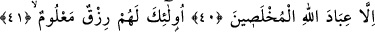
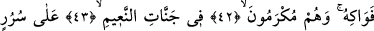
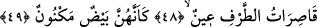
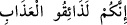
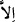
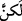
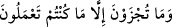

ALLAH’IN HÂLİS KULLARI
40. (Bu azaptan) Ancak Allah’ın hâlis kulları istisnâ edilecek.
41, 42, 43, 44. Bunlar için bilinen bir rızık, türlü meyveler vardır. Naîm
cennetlerinde karşılıklı koltuklar üzerine kurulmuş oldukları halde kendilerine
ikram edilir.
45. Onlara pınardan (doldurulmuş) kadehler dolaştırılır.
46. Berraktır, içenlere lezzet verir.
47. O içkide ne sersemletme vardır ne de onunla sarhoş olurlar.
48. Yanlarında güzel bakışlarını yalnız onlara tahsis etmiş, iri gözlü eşler vardır.
49. Onlar, gün yüzü görmemiş yumurta gibi bembeyazdır.
“(Bu azaptan) Ancak Allah’ın hâlis kulları istisnâ edilecek.” Bu kavl-i ilâhî,
“Kuşkusuz siz acı azâbı tadacaksınız” anlamına gelen “__WORD__ kavlindeki “__WORD__ zamirinden istisnadır. Aradaki
“__WORD__ (Çekeceğiniz ceza yapmakta olduğunuzdan başka bir şeyin
cezası değildir) âyeti mûteriza cümlesidir. Hak ve adâletin hızlı bir şekilde
gerçekleşmesi için getirilmiştir. Bunların azâbı tatmaları aslında başkalarından değil,
kendilerinden olduğunu beyan etmektedir. Bir de zaten istisna munkatı olup yani bu
ihlasa erdirilmiş kullar azab göreceklere dâhil olmadığı için müstesna ile istisna edilen
arasına böyle mûteriza bir cümlenin girmesinde bir sakınca yoktur. “__WORD__” (ancak)
kelimesi “__WORD__ (fakat) mânâsındadır. Keşfü’l-esrar’da der ki, söz burada
“__WORD__ (Çekeceğiniz ceza yapmakta olduğunuzdan başka bir şeyin
cezası değildir) kavliyle tamam olmuştur.
Mana şöyledir: Kuşkusuz siz acı azâbı tadacaksınız. Bu azaptan ancak Allah’ın hâlis
kulları istisnâ edilecek. Yani onlar azâbı tatmayacaklardır. İhlasa erdirilmiş (muhlas)
kullar din ve itaatta Allah Teâlâ’nın kendilerine ihlas verdiği ve kendilerini öz zâtı için
seçtiği kullardır. Bu âyet Allah Teâlâ’nın “(Resûlüm!) De ki: Hamd olsun Allah’a,
selâm olsun seçkin kıldığı kullarına. Allah mı daha hayırlı, yoksa O’na koştukları